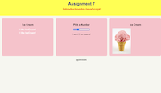

CSCE 242 Web Applications By: Alex Eads
This is my website for the Web Applications course in Summer 2025. I have never taken this class before and so far it is interesting but a bit difficult. Everything has to be so perfect and in exactly the right place. I am excited to hopefully complete the course with an A.
Something that I am very interested in is sports, specifically football and basketball. I am from Philadelphia, therefore I am a huge Eagles and Sixers fan. My two favorite athletes are Jalen Hurts and Joel Embiid. Therefore want my site to have some information and stuff relating to those two teams and athletes.
Assignments
Basic HTML
Assignment 1

For Assignment 01 I made a basic website on a topic of my choosing. I chose to base it around the Sixers and Eagles because they are my favorite teams. The website had to follow a set of guidelines and contain specific elements.
Basic CSS
Assignment 2
In this assignment I created another basic web page, with similar guidelines and must-haves. Instead, this time there was much more emphasis on styling and presentation. I picked a prettier font, went for pleasing color combinations, and formatted the page to look more presentable.
Page Layout CSS
Assignment 3
For this assignment I vastly improved how my main website looks. I adapted it mobile and utlized the different techniques we learned in class to improve overall look and presenatation.
Recreate Page Layout
Assignment 4
For this assignment I had to recreate a page using flex blocks so it works on mobile devices and laptops.
JavaScript: Buttons
Assignment 5
For this assignment I had to make three buttons each using different JavaScript. One to show a message, one for sliders, and one to show an image
JavaScript: Conditionals
Assignment 6
For this assignment we had to make a slide that adjusts the speed of the bike, and another page for css art that would display the correct image depending on the user click.
Javascript: Loops
Assignment 7

For this assignment we worked on the slideshows and setInterval with Javascript to make houses appear and to make a stick figure go through his stretches.
JavaScript: Arrays
Assignment 8
For this assignment we had to make an array of pictures with a hover overlay, when the picture is clicked a bigger pop-up comes up with an X button to escape it.
JavaScript: Classes
Assignment 9
For this assignment we had to use classes to make a site about hot dogs. With more information once they are hovered and clicked.